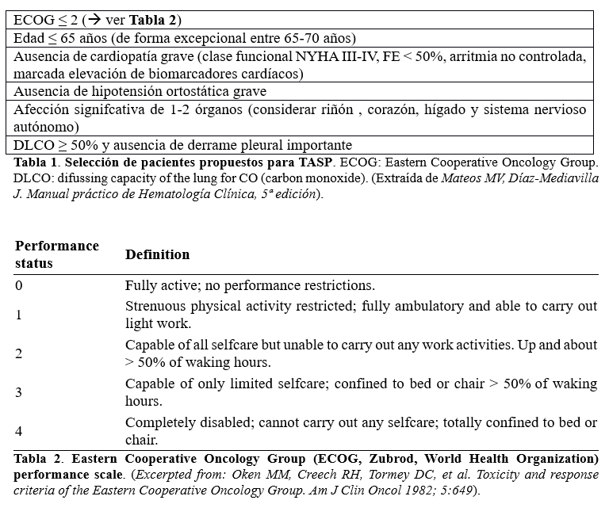

<div class="pages">
  <div data-page="projects" class="page no-toolbar no-navbar">
    <div class="page-content">
    
     <div class="navbarpages">
       <div class="navbar_home_link"><a href="toogle.html"></a></div>
       <div class="navbar_page_center"><b>Especialidades</b></div>
       <div class="menu_open_icon_white"><a href="#" class="open-panel"></a></div>
     </div>
     <div id="pages_maincontent">

          <h2 class="page_subtitle">Glomerulonefritis Secundarias. Enfermedad renal por depósitos de cadenas ligeras y pesadas</h2>
          <p><b>Autor/a:</b> Marina Méndez Molina, Servicio de Nefrología, Hospital La Mancha-Centro, Alcázar de San Juan (Ciudad Real)</p>
          <div class="page_single">         
              <div class="buttons-row">
                    <a href="#tab3" class="tab-link active button">Etiopatogenia</a>
                    <a href="#tab4" class="tab-link button">Clínica</a>
                    <a href="#tab5" class="tab-link button">Diagnóstico</a>
              </div>
              <div class="separadormenu_div"></div>
              <div class="buttons-row">
	              	<a href="#tab6" class="tab-link button">Tratamiento</a>
                    <a href="#tab7" class="tab-link button">Bibliografía</a>
              </div>
              
              <div class="tabs-simple">
                    <div class="tabs">
                          <div id="tab3" class="tab active">
                          		<br />
                                <h4>Etiopatogenia</h4>
                                <p class="justify">
                                    Se trata de una forma de afectación renal en el seno de las neoplasias hematológicas conocidas como gammapatías monoclonales o paraproteínemias, cuyo denominador común es la producción de cantidades elevadas de inmunoglobulinas, o subunidades de las mismas, monoclonales en sangre (paraproteína o proteína M), resultado de la proliferación de células plasmáticas o linfocitos B. 1<br /><br />
                                    Puede aparecer como una complicación infrecuente del mieloma múltiple o de la GMSI.<br />
                                    Es característica por  el depósito a nivel de las membranas basales glomerulares y  tubulares (típico) de Ig monoclonales enteras o subunidades de las mismas, que pueden ser: 
                                </p>
                                	<blockquote class="sin">  
                                    	&bull;&nbsp; Ligeras (enfermedad por depósito de cadenas ligeras). La más frecuente es la tipo K.<br /><br />
                                    	&bull;&nbsp; Pesadas (enfermedad por depósito de cadenas pesadas) <br /><br />
                                    	&bull;&nbsp; Combinación de ambas 
                                    </blockquote>
                          </div>
    
                          <div id="tab4" class="tab">
                          		<br />
                                <h4>Clínica</h4>
                                <p class="justify">
                                    La clínica renal es debida a lesión tubular y glomerular. Suele aparecer proteinuria, habitualmente en rango nefrótico, e insuficiencia renal en grado variable, con microhematuria (aproximadamente en 2/3 de los pacientes1).<br /><br />
El riñón es el órgano afectado con más frecuencia, pero también puede afectar conjuntamente a otros órganos como el hígado y el corazón&sup1;.

                               	</p>     
                          </div> 
                          
                          <div id="tab5" class="tab">
                          		<br />
                                <h4>Diagnóstico</h4>
                                <p class="nojustify">
                                    <b>1. LABORATORIO</b>
                                </p>
                                <p class="nojustify">
                                    &bull;&nbsp; Detección del componente monoclonal:
                                </p>
                                	<blockquote class="sin">  
                                    	- Proteinograma y electroforesis en sangre y orina de 24 h. La proteína monoclonal no suele ser predominante en la orina.<br /><br />
										- Medición de cadenas ligeras (κ y λ) de las Ig que están libres en suero. Puede sustituir a la orina de 24 h solo en el cribado, por lo que se recomienda seguir midiendo la orina de 24 h y no realizar determinación de cadenas ligeras libres en orina3.
                                    </blockquote>
                                
                                <p class="nojustify">
                                    &bull;&nbsp; Identificación del componente monoclonal:
                                </p>
                                	<blockquote class="sin">  
                                    	- Inmunosustracción o inmunufijación (esta última es más sensible).
                                    </blockquote>
                                    
                                <p class="nojustify">
                                    <b>2. MÉDULA ÓSEA:</b>
                                </p>
                                <p class="nojustify">
                                    &bull;&nbsp; Habitualmente hallazgo de < 10% de células plasmáticas monoclonales.
                                </p>
                                <p class="nojustify">
                                    <b>3. BIOPSIA RENAL:</b>
                                </p>
                                <p class="nojustify">
                                    &bull;&nbsp; Diagnóstico definitivo y diferencial con otras nefropatías en el seno de gammapatías monoclonales que cursan con clínica similar,  como es la amiloidosis primaria AL. Los hallazgos anatomopatológicos más característicos son los siguientes&sup2;:
                                </p>
                                	<blockquote class="sin">  
                                    	<b>&bull;&nbsp; Microscopia óptica:</b> 
                                        	<blockquote class="sin">  
                                                - Glomeruloesclerosis nodular, con nódulos de tamaño variable, PAS (+), plata (-) (a diferencia de los nódulos de la nefropatía diabética) y no tiñen con el Rojo Congo ni con el cristal violeta (al contrario que la amiloidosis). <br /><br />
                                                - La MBG aparece focalmente engrosada. Puede haber proliferación celular mesangial, proliferación endocapilar y también se ha descrito proliferación extracapilar<br /><br />
                                                - La lesión tubular es la más frecuente y consiste en engrosamiento del lado intersticial de la membrana basal tubular,  con aspecto de cinta rígida, más prominente en túbulos distales, colectores y asas de Henle. Las características tintoriales de este depósito tubular son similares a la de los nódulos glomerulares.<br /><br />
                                                - Las arterias y arteriolas pueden estar afectas con depósitos similares.<br /><br />
                                                - El intersticio puede presentar grados variables de fibrosis.
 
                                            </blockquote>
                                    </blockquote>
                                    <blockquote class="sin">  
                                    	<b>&bull;&nbsp; Inmunofluorescencia:</b> 
                                        	<blockquote class="sin">  
                                                - Tinción lineal de paredes capilares glomerulares para la cadena ligera (usualmente kappa), con o sin tinción del mesangio.<br /><br />
                                                - Tinción positiva para nódulos.<br /><br />
                                                - Tinción fuerte, lineal, en forma de cinta, alrededor de los túbulos y puede haber una tinción difusa más débil en el intersticio.<br /><br />
                                                - Se pueden determinar depósitos de cadenas ligeras, de cadena ligera y pesada o  solo de cadena pesada, es cuyo caso se habla de enfermedad por depósitos de cadenas pesadas. 
                                            </blockquote>
                                    </blockquote>
                                    <blockquote class="sin">  
                                    	<b>&bull;&nbsp; Microscopia Electrónica:</b> 
                                        	<br />
                                            Depósitos granulares electrodensos peritubulares en mesangio y subendotelio glomerular (en algunos casos no hay depósitos glomerulares, principalmente en casos de cadenas ligeras lambda) y en la media de arterias y arteriolas).
                                            </blockquote>
                                    </blockquote>
                          </div>
                          
                          <div id="tab6" class="tab">
                          		<br />
                                <h4>Tratamiento y pronóstico:</h4>
                                	<p class="justify">
                                    No está estandarizado por la baja incidencia y los pocos datos disponibles hasta la actualidad. Suele realizarse el tratamiento empleado para la amiloidosis primaria (ver capítulo correspondiente):
                                    </p>
                                	<blockquote class="sin">
                                    	&bull;&nbsp; Melfalán más prednisona.<br /><br />
                                        &bull;&nbsp; Talidomida +/- prednisona.<br /><br />
                                        &bull;&nbsp; Regímenes de quimioterapia basados en bortezomib.<br /><br />
                                        &bull;&nbsp; Trasplante autólogo de sangre periférica (TASP) con acondicionamiento previo con melfalán3 en pacientes seleccionados (los que cumplen requisitos para cualquier TASP –tabla 1- y sin respuesta previa al tratamiento tipo mieloma múltiple o amiloidosis primaria).
                                    </blockquote>
                                    <p class="justify">
                                    Un estudio prospectivo  de 53 pacientes con enfermedad de depósito por cadenas ligeras (EDCL), seguidos durante 6,2 años, sugiere que una respuesta completa hematológica o una buena respuesta parcial se asocia con mejoría del filtrado glomerular en el tiempo, incluso en ERC-4, disminuyendo la incidencia de rechazo en el postrasplante renal asociado a recurrencia de EDCL4,5. De los esquemas terapéuticos usados, los que se asociaron con mejores resultados fueros los regímenes basados en bortezomib y el trasplante autólogo de progenitores hematopoyéticos acondicionado con melfalán. Los resultados del trabajo establecen una mejor respuesta renal que en lo descrito hasta ahora para amiloidosis primaria tratada con quimioterapia.
                                	</p>
                                    <p></p>
                    	</div>
                    	<div id="tab7" class="tab">
                          		<br />
                                <h4>Bibliografía:</h4>
                                <p class="nojustify">
                                    1.	Fulladosa X. Nefropatía asociada a gammapatías monoclonales. En: Lorenzo V, López Gómez JM (Eds) Nefrología al Día. <a href="#" onclick="window.open('http://dev.nefro.elsevier.es/es-monografias-nefrologia-dia-articulo-nefropata-asociada-gammapatas-monoclonales-15', '_system');">http://dev.nefro.elsevier.es/es-monografias-nefrologia-dia-articulo-nefropata-asociada-gammapatas-monoclonales-15</a> <br /><br />
                                    2.	<a href="#" onclick="window.open('http://www.kidneypathology.com', '_system');">www.kidneypathology.com</a>. <br /><br />
                                    3.	Mateos MV, Díaz-Mediavilla J. Manual práctico de Hematología Clínica, 5º Edición. <br /><br />
                                    4.	Sayed RH, Wechalekar AD, Gilbertson JA, Bass P, Mahmood S, Sachchithanantham S, Fontana M, Patel K, Whelan CJ, Lachmann HJ, Hawkins PN, Gillmore JD. Natural history and outcome of light chain deposition disease. Blood. 2015;126(26):2805-10.<br /><br />
                                    5.	Leung N, Lager DJ, Gertz MA, Wilson K, Kanakiriya S, Fervenza FC. Long-term outcome of renal transplantation in light-chain deposition disease. Am J Kidney Dis 2004;43:147-53.

                                </p>
                    	</div>
              </div>        
          </div>     
      </div>  
    </div>
  </div>
</div>